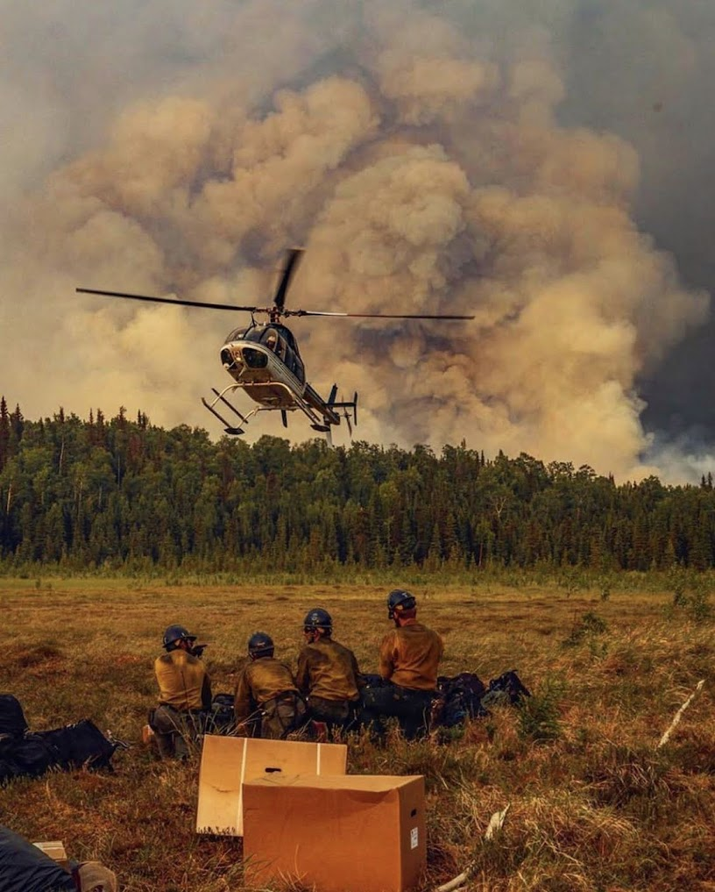

About Us
Gridline Tech is a startup LLC based out of Palmer, Alaska, with an aim of building smart, field-ready software for the wildland fire community. Our flagship product — the Fire Manifesting App — helps wildland firefighting crews streamline helicopter load calculations and configurations, reduce logistical errors, and respond faster in high-paced, changing operational environments.
